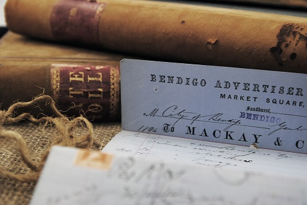

Local History Research

Bendigo Regional Archives Centre (BRAC) records are often used for local history research. Rates Books and building registers are used for researching properties and houses. Court records, other council records, maps and plans as well as correspondence are also used for local history research.
The 19th Century Inwards Correspondence to Sandhurst/Bendigo Council is an example of a Collection with a wealth of local historical material including letters, memos, reports and petitions.
Go to BRAC Records to see the complete lists of BRAC records you can order.
The Bendigo and Districts Court Records dating from 1858 are useful for tracing ancestors and local happenings. Email brac@ncgrl.vic.gov.au to ask about court records relating to children sent to industrial schools as well as registers listing licensees, insolvencies and divorces.
Other Resources
The Goldfields Research Centre (GRC) is on the first floor of the Bendigo Library and has many other resources to assist with your local and family research.
http://www.ncgrl.vic.gov.au/libraries/goldfieldsresearchcentre
The Bendigo Library also has books and resources about Bendigo local history http://www.ncgrl.vic.gov.au/libraries
The Bendigo Advertiser has been digitised from 1854 – 1918 and is available through TROVE www.trove.nla.gov.au
The State Library of Victoria also holds resources on the history of Bendigo www.slv.vic.gov.au
The Public Record Office of Victoria (PROV) has State records relating to the Bendigo area including Education and Industrial School records www.prov.vic.gov.au
More assistance is available through BRAC or the Goldfields Research Centre (GRC) located on the first floor of the Bendigo Library.